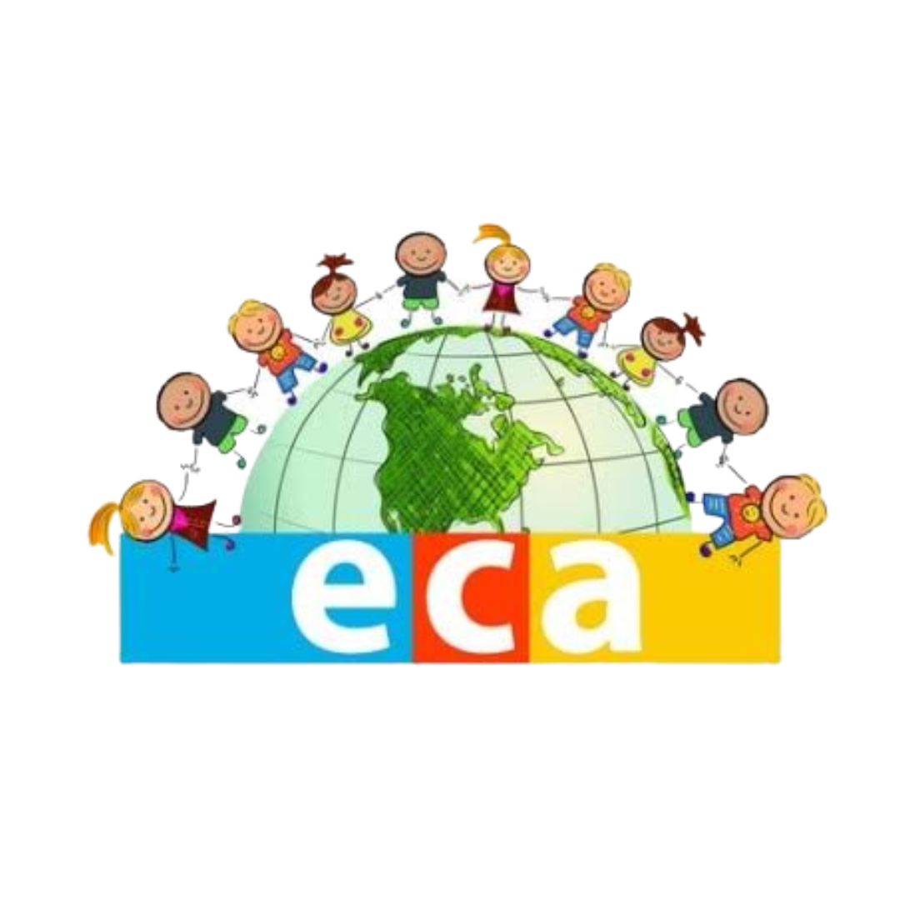
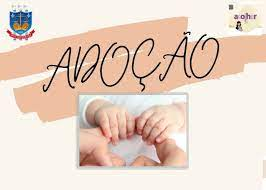
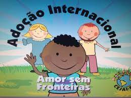

1-Direito à vida e à saúde
Segundo o art. 7º, da Lei 8069/90, “a criança e o adolescente têm direito a proteção
à vida e à saúde, mediante a efetivação de políticas sociais públicas que permitam o nascimento e o desenvolvimento
sadio e harmonioso, em condições dignas de existência.”.

2-Direito à liberdade, ao respeito e à dignidade
Segundo o art. 15, da Lei 8069/90, “a criança e o adolescente têm direito à liberdade, ao respeito e à dignidade como pessoas humanas em processo de desenvolvimento e como sujeitos de direitos civis, humanos e sociais garantidos na Constituição e nas leis.”.

3-Direito à convivência familiar e comunitária
Segundo o art. 19, da Lei 8069/90, “é direito da criança e do adolescente ser criado e educado no seio de sua família e, excepcionalmente, em família substituta, assegurada a convivência familiar e comunitária, em ambiente que garanta seu desenvolvimento integral.” .

4-Direito à educação, à cultura, ao esporte e ao lazer
Segundo o art. 53, da Lei 8069/90, “a criança e o adolescente têm direito à educação, visando ao pleno desenvolvimento de sua pessoa, preparo para o exercício da cidadania e qualificação para o trabalho […]”.

5-Direito à profissionalização e à proteção ao trabalho
Segundo o art. 69, da Lei 8069/90, o adolescente tem direito à profissionalização e à proteção no trabalho, observados os seguintes aspectos, entre outros: i) respeito à condição peculiar de pessoa em desenvolvimento; ii) capacitação profissional adequada ao mercado de trabalho.

6-Direitos fundamentais previstos na Lei 8069/90
Dispõe o artigo 3º da Lei 8069/90:
“A criança e o adolescente gozam de todos os direitos fundamentais inerentes à pessoa humana, sem prejuízo da proteção integral de que trata esta Lei, assegurando-se-lhes, por lei ou por outros meios, todas as oportunidades e facilidades, a fim de lhes facultar o desenvolvimento físico, mental, moral, espiritual e social, em condições de liberdade e de dignidade.”

7-Direitos da Adoção
art.50 A autoridade judiciária manterá, em cada comarca ou foro regional, um registro de crianças e adolescentes em condições de serem adotados e outro de pessoas interessadas na adoção. (Vide Lei nº 12.010, de 2009) Vigência

8-A adoção internacional
a pessoa ou casal estrangeiro, interessado em adotar criança ou adolescente brasileiro, deverá formular pedido de habilitação à adoção perante a Autoridade Central em matéria de adoção internacional no país de acolhida, assim entendido aquele onde está situada sua residência habitual; (Incluída pela Lei nº 12.010, de 2009) Vigência

9-Processo educacional
Art. 58. No processo educacional respeitar-se-ão os valores culturais, artísticos e históricos próprios do contexto social da criança e do adolescente, garantindo-se a estes a liberdade da criação e o acesso às fontes de cultura
10-Trabalho de menor
Art. 60. É proibido qualquer trabalho a menores de quatorze anos de idade, salvo na condição de aprendiz. (Vide Constituição Federal)